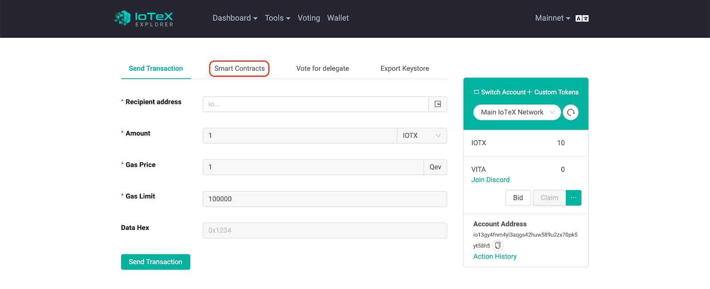
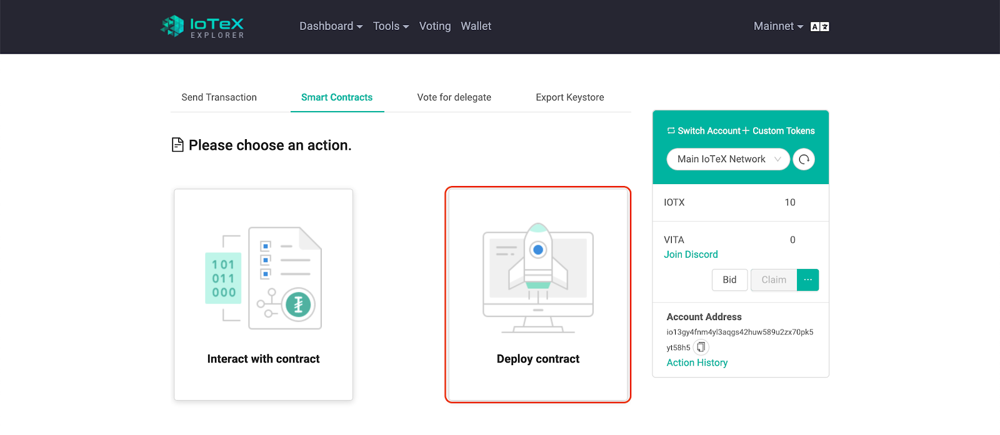
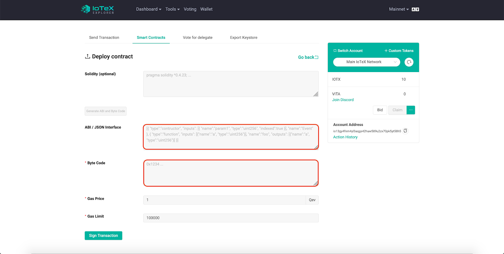
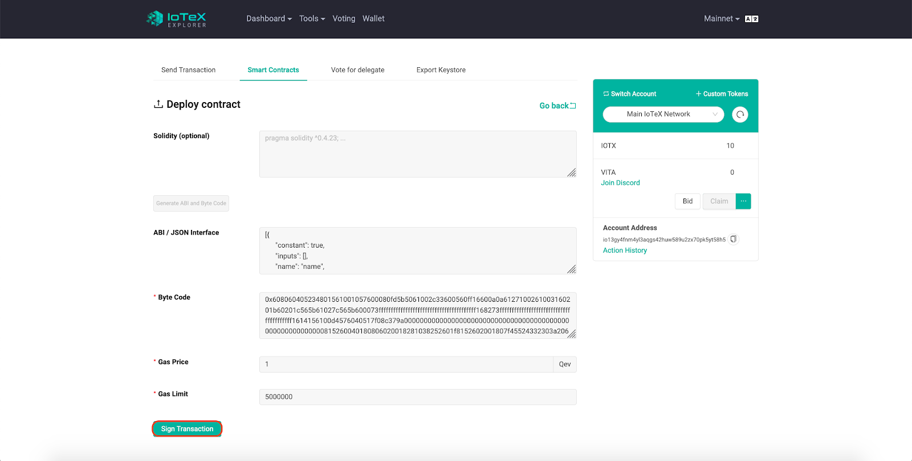
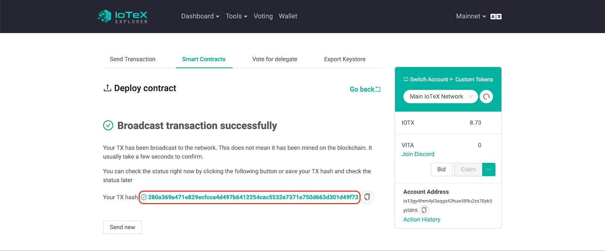
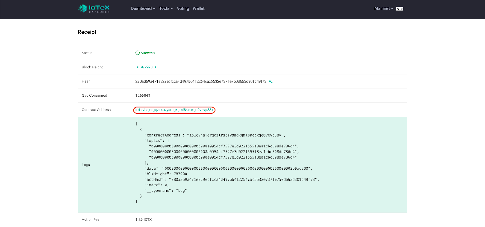
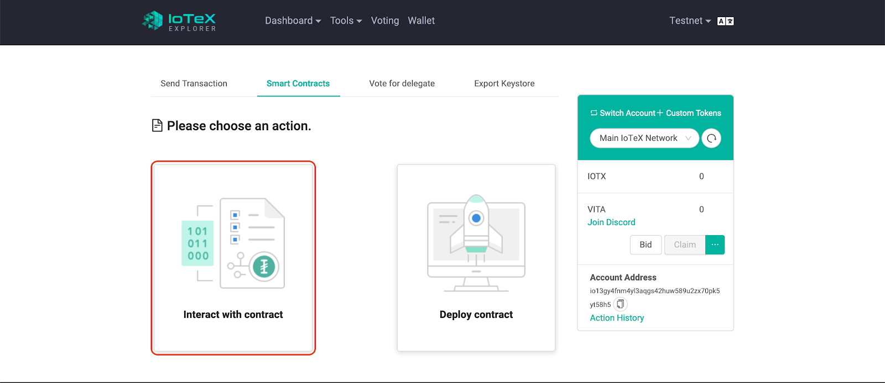
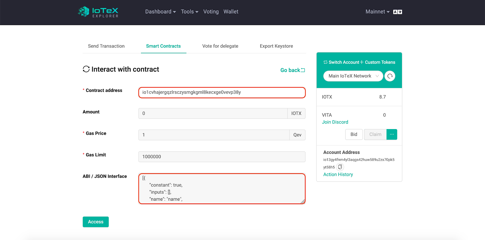
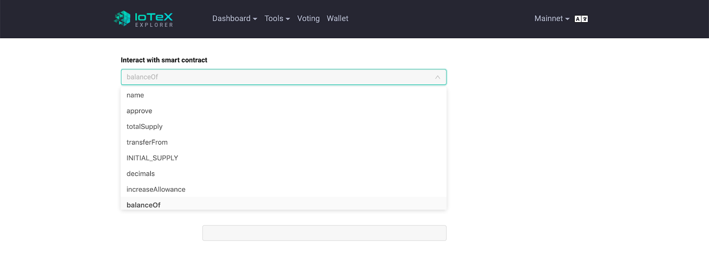
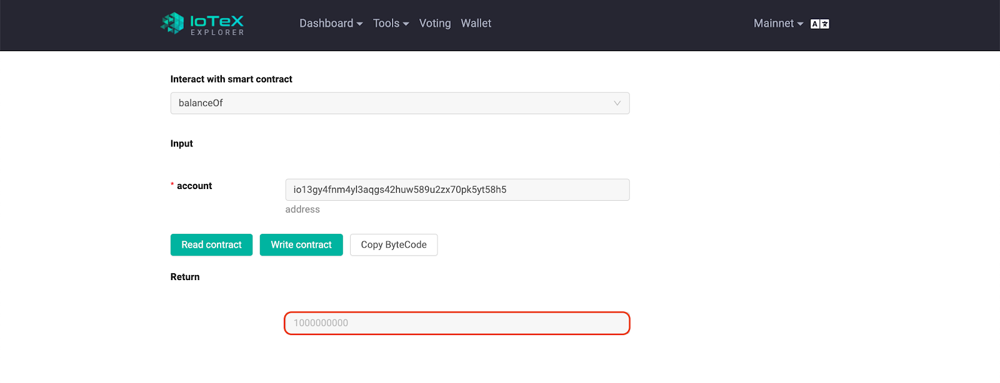

Last Updated: 2019-07-23
This codelab serves as a comprehensive step-by-step guide on how to deploy a smart contract on the IoTeX network! We will be creating a simple ERC20 token called BasicToken and deploying it on MainNet Alpha.
"Smart contracts are self-executing contracts with the terms of the agreement between buyer and seller being directly written into lines of code. The code and the agreements contained therein exist across a distributed, decentralized blockchain network" - Investopedia
Download and install node and npm from NodeJS website. We will need npm (Node Package Manager) to help with managing dependencies and utilizing Open-Zeppelin, a library for smart contract development.
Verify your installation:
$ node -v $ npm -v
Truffle is a popular development framework for Ethereum. We will use truffle to compile our smart contract.
$ npm install -g truffle
To begin, make a new directory and initialize an empty truffle project. This will be the environment we work in to build smart contracts.
$ mkdir BasicToken $ cd BasicToken $ truffle init
Now initialize a new npm project within your environment:
$ npm init -y
We will be using OpenZeppelin to create a barebones ERC20 token. OpenZeppelin is another great library for secure smart contract development. It provides implementations of ERC20 standards that we will use to create our own token!
$ npm install -E openzeppelin-solidity
We will now begin writing our smart contract!
Through the truffle init command, a new contracts folder should have been created. Add a new
solidity file to the contracts folder and open it in the code editor of your choice.
All solidity contracts begin with the version definition (0.5.0 is the latest version):
pragma solidity ^0.5.0;Now import the OpenZeppelin ERC20 class that we will be inheriting from:
import "../node_modules/openzeppelin-solidity/contracts/token/ERC20/ERC20.sol";We can now define our new smart contract. In this example, we will call it BasicToken:
contract BasicToken is ERC20 {
string public constant name = "BasicToken";
string public constant symbol = "BT";
uint8 public constant decimals = 5;
uint256 public constant INITIAL_SUPPLY = 10000 * (10 ** uint256(decimals));
constructor() public {
_mint(msg.sender, INITIAL_SUPPLY);
}
}Our BasicToken has a few fields you can customize:
Name : the name of your tokenSymbol : your token's symbolDecimals : the decimal count of your tokenINITIAL_SUPPLY : the total number of initial tokens in circulationFeel free to change these fields to whatever you'd like.
In our basic token definition, all of the INITIAL_SUPPLY is given to the contract instantiator, as
defined by the _mint function
And that's it. Our solidity smart contract is finished!
To compile our contract, we are going to use Truffle. Truffle automatically compiles all .sol
files we have in our contracts folder and builds them in the build/contracts directory.
Call truffle compile:
$ truffle compile
Navigate to your build folder. You should see a folder called contracts:
$ cd build $ ls contracts
Within contracts you will see multiple JSON files. One of which will be named BasicToken.json, or
if you customized the contract, the contract name you chose.
BasicToken.json holds two key values that you will need to deploy your smart contract: abi and
bytecode. ABI (Application Bytecode Interface) is necessary to access the bytecode, which contains your smart
contract converted to binary data.
Open BasicToken.json and record these two values.
It should look something like this:
{
"contractName": "BasicToken",
"abi": [{...}],
"metadata" : "...",
"bytecode" : "0x608...",
"deployedBytecode": "...",
...
}Ignore the metadata and deployedBytecode. What you are looking for is the value of
abi and bytecode.
In our example:
abi : [{ ... }]bytecode : 0x608...To deploy our BasicToken, we should visit iotexscan.io/wallet, to deploy on MainNet, or testnet.iotexscan.io/wallet, to deploy on TestNet. In this example, we will be deploying on MainNet, but regardless, the steps should be identical.
After visiting iotexscan, log into your wallet, either by private key or keystore. If you don't have a wallet, make one.
After logging in, you should be brought to this page. Select smart contract:

Select deploy contract:

Paste your abi and bytecode into the corresponding fields:

Select a gas price and gas limit. The gas price is the price per unit of gas and the gas limit is the total amount of gas willing to be spent before the transaction is dropped.
In our example, we will set the gas price to 1 and the gas limit to 5,000,000.
Select sign contract and confirm:

You will receive a transaction hash. Wait until the icon turns green and click on your hash to query it. Alternatively, you can query manually on iotexscan.io:

After successfully querying your transaction, scroll down and you should see a contract receipt which contains your contact address. Record this down as this is necessary to interact with your smart contract:

As you can see, an action fee of 1.26 IOTX was consumed to deploy this contract.
Hurray! You just deployed your first contract. Now we can interact with our contract and see how it works.
Go back to iotex-scan.io/wallet or testnet.iotexscan.io/wallet, if you deployed on Testnet, but this time select interact with smart contract:

Now paste in the contract address and abi you recorded earlier and hit access:

You should now see a dropdown menu under "Interact with smart contract":
Try clicking on it, you should see all of the functions defined in our smart contract:

Note that in our smart contract, we didn't define any functions. All functions were inherited from Open-Zeppelin's erc20 token standard. We did however, define a constructor which gives us the total supply.
You can select any of these functions and try running them.
For example, readBalance should return the INITIAL_SUPPLY that we defined earlier:

As you can see, the contract is functioning as expected. We have all of the initial supply in our account!
Congratulations! You have finished the codelab.
Now that you know how to write and deploy a simple smart contract, you can go on to build more sophisticated contracts, such as dapp games and much more!